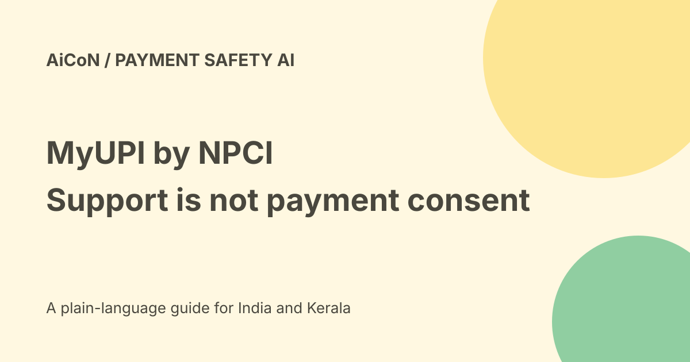

MyUPI by NPCI: support, mandates and safety controls
NPCI announced MyUPI, or UPI Help 2.0, at Global Fintech Fest on 10 September 2026. It is built on NPCI's FiMI model and describes support, transaction visibility, mandates and safety controls. A launch announcement does not prove every bank and account exposes every feature today.

What is MyUPI?
The official release describes a single view of UPI transactions and AutoPay mandates across banks and apps, with 24x7 multilingual support.
The live official help page asks for a linked mobile number, security verification and agreement to terms. Its public page lists payments Q&A, mandate management and grievance redressal. We did not log in or inspect personal records.
Safety Switch is a request
NPCI says Safety Switch enables users to request declining UPI debit transactions when compromise is suspected. That wording is narrower than a guarantee that every debit instantly stops.
Read the actual scope, confirmation, affected accounts and reversal process before changing a control. In a fraud emergency, contact the bank and appropriate official reporting route rather than relying on a chat answer alone.
UPI Number de-linking
The release describes de-linking a mobile number used to receive UPI payments. That can affect how others pay you.
Do not confuse it with changing a bank account, cancelling every mandate or deleting every UPI app. Check the exact control and its consequence before confirming.
Chargeback creation is not guaranteed refund
The release describes real-time chargeback creation for eligible transactions. Eligibility and a created dispute are different from the bank approving a refund.
Keep the transaction ID, date, amount and complaint acknowledgement. Read the response and escalation terms rather than assuming every failed or disputed payment is returned immediately.
Transaction Replay can lead to payment
NPCI says Replay helps users recall and repeat past transactions using a UPI app. That makes recipient and amount review important.
Repeating an old payment can send money twice or to someone no longer intended. Verify the current recipient, amount, purpose and final payment screen. The support assistant is not permission to move funds.
Do not promise every payment always needs a PIN
The archive's blanket PIN sentence is too broad. The same official release describes separate Tap & Pay functionality allowing PIN-less transactions up to Rs 5,000, with its own conditions.
This guide does not instruct using that payment feature. It simply avoids an absolute authentication claim. Never give your PIN, OTP or credentials to a support caller or type them into an ordinary chat response.
A safe help workflow
- Open the official NPCI UPI Help page directly.
- Read terms and use the linked-number verification only on the actual service.
- Identify the exact transaction or mandate.
- Ask a narrow question without pasting secrets.
- Read the proposed control or complaint before confirming.
- Check whether it affects future payments or only one transaction.
- Save the acknowledgement.
- Verify the result with the bank or UPI app.
Mandates need their own review
An AutoPay mandate can govern a recurring payment. Viewing it, pausing it, changing it and revoking it are different actions.
A safety choice can also interrupt a legitimate bill. Confirm the merchant, cap, frequency and effective date before changing a mandate.
Free and India limits
NPCI's launch does not establish a final fee schedule for every bank interaction or all related transactions. No personal feature access, account fee or complete language matrix was verified.
No mobile number was submitted, security challenge solved, mandate changed, complaint filed or payment made here. Malayalam support and exact bank rollout remain untested.
What changed since the original post?
We distinguish request from guaranteed blocking, dispute creation from refund, and Replay from harmless history viewing. The guide removes the universal PIN claim and keeps authenticated feature access untested.
Frequently asked questions
Does a chargeback request guarantee a refund?
No. Eligibility and bank resolution still matter.
Can Replay affect real money?
Yes. Review the final payment in the UPI app.
Was an account inspected?
No. Only the public help page and announcement were read.
Sources: Official NPCI launch release · Verified official help-page destination. Checked 7 October 2026.